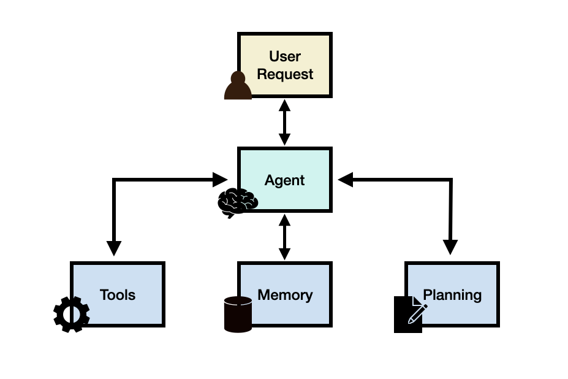
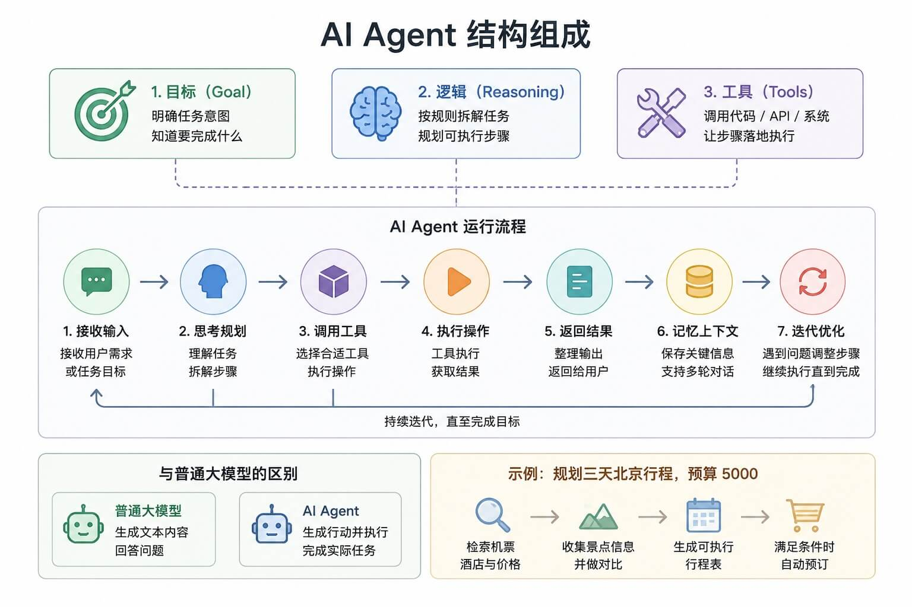

Tutorial de AI Agent (Agente inteligente)
AI Agent (Agente de Inteligencia Artificial) se llama agente inteligente. En esencia, es un programa que ejecuta tareas automáticamente. El núcleo es hacer que el modelo no solo responda preguntas, sino que complete acciones paso a paso.
AI Agent (Agente de inteligencia artificial)Es una entidad de software inteligente que puede percibir el entorno, tomar decisiones y ejecutar acciones para lograr objetivos específicos. No es solo un chatbot que responde preguntas, sino un ejecutor inteligente capaz de hacer cosas concretas.
Agent = LLM (cerebro) + Planning (planificación) + Tool use (ejecución) + Memory (memoria).
Experimenta rápidamente con 0 código, genera aplicaciones con una sola frase:https://www.miaoda.cn/。
¿Quién debería leer este tutorial?
- Personas que quieren usar IA para automatizar tareas diarias
- Principiantes que no dominan la programación pero quieren usar IA para hacer trabajo real
- Personas que saben operar una computadora a nivel básico pero no tienen ningún conocimiento sobre conceptos como Agent/flujo de trabajo
- Personas que quieren llevar la IA de solo chatear a hacer trabajo real
¿Qué es un Agent?
Un Agent es un asistente inteligente que puede hacer cosas.
Agent = LLM (cerebro) + Planning (planificación) + Tool use (ejecución) + Memory (memoria).
Aprender sobre Agent requiere un cambio de mentalidad: dediálogo de preguntas y respuestas en un cuadro de chatevolucionar aejecución de tareas impulsada por objetivos。

Los programas de software tradicionales siguen un flujo de instrucciones fijo:Entrada → Procesamiento → Salida, mientras que un AI Agent se parece más a unempleadoautónomo, que puede:
- Comprender los objetivos de la tarea: entender qué resultado deseas
- Elaborar un plan: pensar cómo lograr el objetivo
- Usar herramientas: invocar diversos recursos y API
- Autoajustarse: optimizar la estrategia según la retroalimentación
- Ejecutar de forma continua: hasta completar la tarea o encontrar un problema irresoluble
Comprensión mediante analogías:
- Programa tradicional = máquina expendedora: insertar moneda → pulsar botón → sale el producto
- AI Agent = asistente personal: indicar la necesidad → el asistente planifica → completa la tarea e informa
Estructura central:
- Objetivo (Goal):saber qué hay que completar
- Decisión (Reasoning):planificar los pasos de ejecución
- Herramientas (Tools):invocar API, código o sistemas para completar la tarea
Flujo de trabajo:
Entrada → Pensamiento → Invocar herramienta → Ejecutar → Devolver resultado → Iteración continua
Diferencia con los grandes modelos de lenguaje comunes:
- Gran modelo de lenguaje: genera contenido
- Agent: genera resultados e impulsa la ejecución
Por ejemplo, si conversamos con un AI Agent y le decimos:Planifica un viaje de tres días a Pekín con un presupuesto de 5000, el agente inteligente completará las siguientes tareas:
- Desglosar los requisitos
- Consultar vuelos, hoteles y atracciones
- Generar un plan de itinerario
- Continuar completando la reserva cuando se cumplan las condiciones

Recursos de aprendizaje
Plataformas existentes y frameworks populares:
| Necesidad principal | Herramienta recomendada | Ventaja clave |
|---|---|---|
| Miaoda, genera aplicaciones con una sola frase | Sitio web oficial de Miaoda | 0 código, genera requisitos y aplicaciones mediante una sola frase |
| MonkeyCode, plataforma de desarrollo de aplicaciones de IA | Sitio web oficial de MonkeyCode | Crear tareas directamente en la plataforma, dejar que la IA programe, y usar terminal, gestión de archivos y vista previa en el entorno de desarrollo en la nube |
| Xiaoyunque, la generación de video con IA de Jianying (CapCut) | Jianying - Xiaoyunque | Modelo de video Seedance 2.0 de desarrollo propio de ByteDance + modelo de imagen Seedream 5.0, combinados con el gran modelo Doubao para comprensión de textos |
| QoderWork, AI Agent de nivel escritorio | QoderWork | Tú indicas la necesidad, él entrega el resultado. |
| Automatización de disparadores e integración con sistemas | n8n | Amplia integración, autoalojable, capaz de conectar con sistemas internos convencionales |
| Personalización profunda controlable por el desarrollador |
Dify LangChain |
El primero ofrece una solución de código abierto completa; el segundo es adecuado para construir cadenas de razonamiento complejas |
| Colaboración multirol y descomposición de tareas | AutoGen CrewAI |
El primero enfatiza la colaboración dinámica; el segundo impulsa el flujo mediante un sistema de roles claro |
| Agent de ejecución autónoma de tareas | AutoGPT | Proyecto Agent de código abierto que fue un fenómeno temprano, enfatiza el impulso por objetivos, la descomposición autónoma de tareas y la ejecución en bucle (Plan → Execute → Reflect) |
Los siguientes son otros frameworks de código abierto populares de AI Agent. Estos proyectos se centran principalmente en la llamada de herramientas (Tool Calling), la memoria (Memory), el flujo de trabajo (Workflow), la colaboración multi-Agent (Multi-Agent) y la capacidad de ejecución de tareas a largo plazo.
| Proyecto | Posicionamiento | Características |
|---|---|---|
| OpenAI Agents SDK | Framework de desarrollo de Agent ligero | Soporta llamada de herramientas, traspaso (Handoff), orquestación multi-Agent, estructura simple y curva de aprendizaje rápida |
| LangGraph | Orquestación de Agent basada en máquina de estados | Controla flujos complejos mediante estructura de grafos, soporta estados de largo plazo y ejecución en bucle |
| LlamaIndex | Framework RAG + Agent | Especializado en escenarios de base de conocimiento, conexión de datos y recuperación aumentada |
| Semantic Kernel | Orquestación de Agent de nivel empresarial | Código abierto de Microsoft, soporta plugins, flujos, memoria y colaboración multimodelo |
| PydanticAI | Desarrollo de Agent con seguridad de tipos | Usa el sistema de tipos de Python para restringir la salida, adecuado para aplicaciones de ingeniería |
| Mastra | Framework de Agent full-stack moderno | Soporta Workflow, Memory, despliegue y capacidades de observabilidad |
| Agno (anteriormente Phidata) | Framework de aplicaciones multi-Agent | Enfatiza la capacidad de combinación de Agent + Knowledge + Tools |
| Camel-AI | Framework de colaboración multi-agente | Simula la colaboración en equipo y la descomposición de tareas mediante mecanismos de juego de roles |
| MetaGPT | Framework de simulación de empresa de software | Divide producto, arquitectura, desarrollo y pruebas en múltiples roles que colaboran en la ejecución |
| Swarms | Orquestación de clústeres de Agent | Enfatiza la colaboración de Agent a gran escala y la programación de tareas |
| Haystack Agent | Agent de búsqueda y mejora de conocimiento | Adecuado para búsqueda empresarial, preguntas y respuestas sobre documentos y combinación de cadenas de herramientas |
| Atomic Agents | Arquitectura de Agent componible | Enfatiza el diseño modular y la testabilidad |
| DSPy | Framework de Prompt / Agent declarativo | Industrializa y optimiza el Prompt y el proceso de razonamiento |